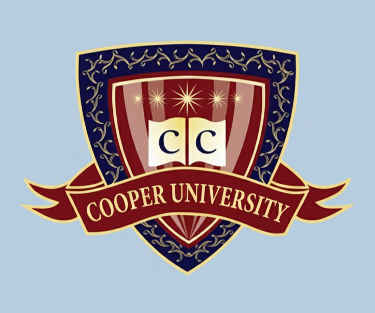

<header class="theHeader">
    <div class="logoName">
        
        <h1 class="uniName">Coopers University of Technology</h1>
    </div>
    
    <!-- Hamburger Menu Icon -->
    <div class="menu-toggle">
        <i class="fa fa-bars"></i>
    </div>
    
    <div class="categories" id="navlinks">
        <a class="option" href="./index.html">Home</a>
        <a class="option" href="./about.html">About</a>
        <a class="option" href="./academics.html">Academics</a>
        <a class="option" href="./research.html">Research</a>
        <a class="option" href="./campus.html">Campus</a>
        <!-- Close button for mobile menu -->
        <i class="fa fa-times" style="position: absolute; top: 20px; right: 20px; font-size: 1.5rem; cursor: pointer; color: rgb(15, 40, 84);"></i>
    </div>
    
    <div class="endCategory" id="endCategory">
        <a class="option" href="https://www.youtube.com/watch?v=dQw4w9WgXcQ" target="_blank">Visit/Apply/Give</a>
    </div>
</header>